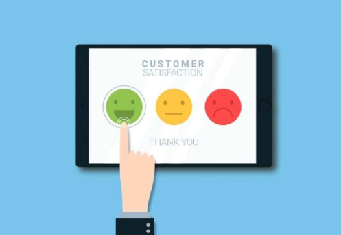

This career path involves research into the human aspect of an interface. The UX designer will take the time to inquire from the user base as to what their needs are and how a tool should optimally function.
Working in this field will require someone inquizative and ensure that the product they design feels good, before passing the concept to a UI designer to make it look good.
